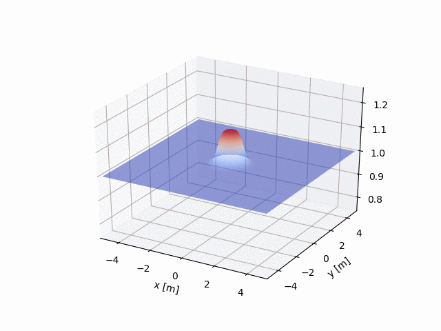

Background and Research Interests
Andrew Jones
My academic background is in physics and applied mathematics and my research interests are geared toward the development of mesh and mesh-free codes for solving multiphysics problems and coupled Partial Differential Equations (PDEs) that arise in biological, atmospheric, and astrophysical phenomena. Currently I am working on mesh-free methods with my advisor Professor Grady Wright in the Mathematics Department applying Radial Basis Function
Finite Differences (RBF-FD) to solve problems involving bulk-surface biomechanics by coupling Surface Reaction Diffusion and Fluid Dynamics models. Some of my previous work has been Computational Fluid Dynamics simulations of Pebble Bed Nuclear reactors using the Finite Volume framework OpenFOAM. I have also co-authored papers and presented work on active galaxy evolution by connecting large scale cosmological simulations and with luminosity data from the Fermi Space Telescope and the Sloan Digital Sky Survey with the theory from the spin gap paradigm .


